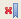
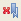

You can find a topic more easily by setting a bookmark and saving it to the Bookmarks view of the help system.
Procedure
- To set a bookmark for the current topic in the Topic pane,
click Bookmark (
 ) on the toolbar.
) on the toolbar. - To see your bookmarks, click the Bookmarks tab
(
 )
on the toolbar. Note:
)
on the toolbar. Note:- If the help system is running in the information center mode,
the Bookmark button () is displayed
only when you browse pages with Internet Explorer. You can click the Favorite menu
of Internet Explorer to find the bookmarks that you created.
- If the help system is running in the stand-alone mode, click the Bookmarks tab
() to find your bookmarks.
- If the help system is running in the information center mode,
the Bookmark button (
- To delete a bookmark, click the Bookmarks tab
(),
select the topic name in the Topic pane, and click Delete
Selected Bookmark () on the toolbar.
- To delete all bookmarks, click the Bookmarks tab
(),
and click Delete All Bookmarks ()
on the toolbar.